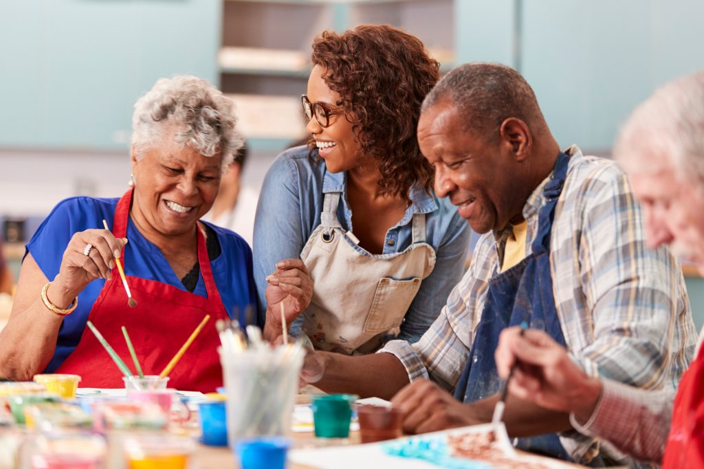
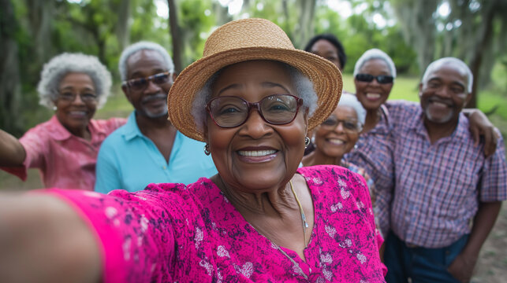

Case Management
Individualized support, care coordination, service planning and connections to appropriate community resources.
Helping older adults remain independent, connected, active and engaged while aging in place in the Rochdale Village community.
Rochdale Village NORC is a supportive social service program for seniors who live in the Rochdale Village cooperative. The program connects residents with services, resources, activities and community opportunities designed to support healthy, vibrant and independent living.
NORC stands for Naturally Occurring Retirement Community—a model that supports people who have grown older in the homes and community they already know.
Learn about our services →NORC brings together supportive resources and community programming to help residents stay connected and independent.
Individualized support, care coordination, service planning and connections to appropriate community resources.
Assistance with SCRIE, DRIE, SNAP and other benefits, applications and community resources.
Support with coordinating health-related needs, wellness resources and ongoing care connections.
Help connecting residents with health-care information, services, programs and community resources.
Friendly check-in calls that help residents stay connected, supported and informed.
Compassionate visits that provide social connection, check-ins and supportive community engagement.
Connections to health care, social services, benefits, community organizations and other resources.
Volunteer opportunities and support that strengthen community connections and assist residents.
Our NORC team works together to support residents, coordinate services and strengthen community life.
NORC activities are designed to bring residents together while supporting healthy and engaged lifestyles.
Programs that encourage safe, active living.

Informative sessions on topics important to older adults.

Opportunities to meet neighbors and build friendships.
Community experiences and recreational opportunities.
NORC clients can connect with services, programs and resources that support healthy, active and independent living in Rochdale Village. Tell us a little about what you need so our team can better assist you.
Questions about NORC services, activities or client support? Contact the NORC office.
169-65 137th Avenue
Rooms 19 & 20
Jamaica, NY 11434
Monday – Friday
9:00 AM – 5:00 PM